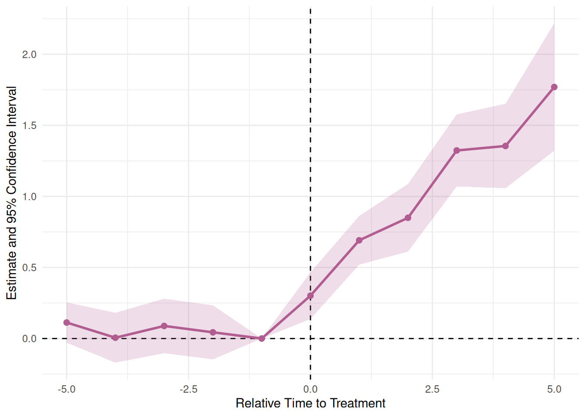
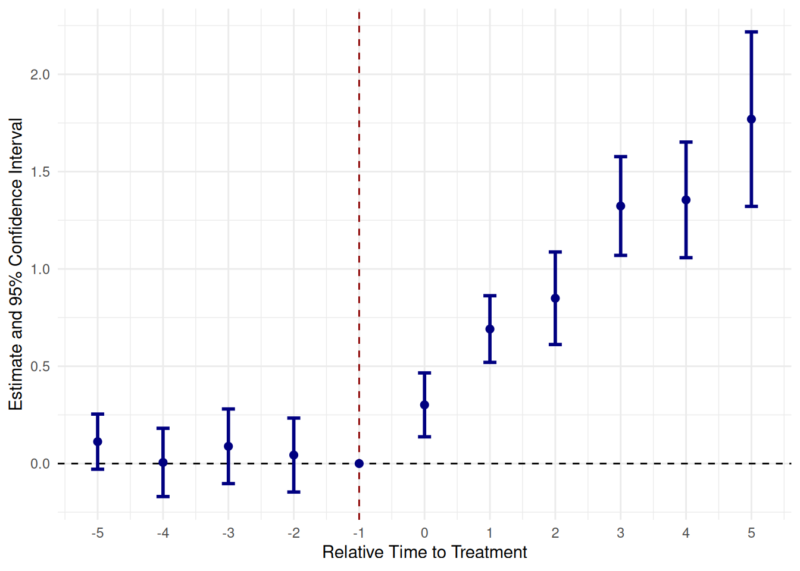
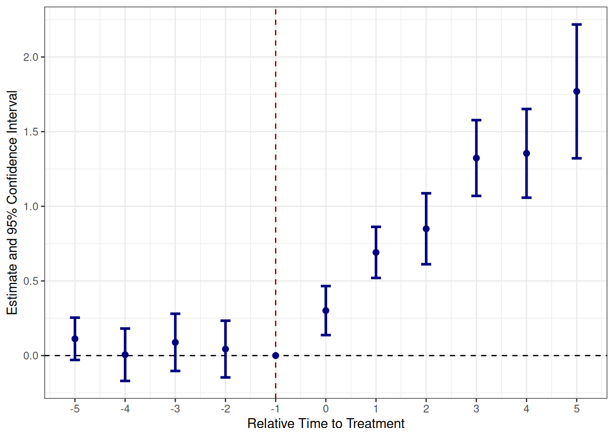

plot_es(event_study)
fixesでイベントスタディを効率化2024年12月30日
突然ですが、最近Rパッケージを作成しました。その名もfixesです。
初めて作ったので穴も多いと思うのですが、このパッケージではDIDにおける平行トレンドの確認をする方法であるイベントスタディをより簡易的に行う関数を提供しています。
この記事では宣伝も兼ねて、使い方を簡単にご紹介します。
改善点やお気づきの点があれば、最下部のコメントか、GitHubのIssueに投げていただけると助かります。
イベントスタディのプロットをする方法として、fixestが提供するi()とiplot()を使うものがあります。
個人的にiplot()ではggplot2を用いたプロットができない点があり、i()から結果をデータフレーム化するのも少々手間かなと思います。
そこでダイレクトに結果のデータフレームが返ってくる、そしてベースのプロットがggplot2であり、特にいじらなくてもそれなりのプロットが作成できる点が売りのfixesを作りました1。
また、リードとラグの範囲を個別で指定できる点や、ベースラインも自由に指定できる点など、僕の技術で及ぶ範囲は柔軟性を求めたつもりです。
2024年12月30日時点では、パッケージをCRANに公開していないので、install.packages()でインストールすることができません。GitHubより以下の方法でインストールしてください。
もしくは、
です。
DIDに用いるデータフレームをそのまま用いることができます。
要件は、
id）year）を含んでいることです。
メインの関数は、run_es()関数です。ここにデータフレームを渡すことで、自動的にリード変数とラグ変数を作成し、回帰分析を実行、結果のデータフレームを返します。
引数は次の通りです。
| 引数 | 説明 |
|---|---|
data |
使用するデータフレーム |
outcome_var |
アウトカム変数 |
treated_var |
処置個体を示すダミー変数 |
time_var |
時間を表す変数 |
timing |
処置タイミングを表す数値 |
lead_range |
処置前の期間の長さ（処置年は除く） |
lag_range |
処置後の期間の長さ（処置年は除く） |
fe_var |
固定効果 |
cluster_var |
クラスタリングの単位（任意） |
baseline |
ベースラインとする時点（相対時間で指定、デフォルトでは-1） |
interval |
時間変数の間隔（例：毎年のデータなら1、国勢調査なら5。デフォルトでは1） |
cluster_var以下は任意です。
この関数の限界として、時間の変数として年を想定している点があります。そのため、月次データ等は時間に通し番号を追加しておくことを推奨します。
例えば、5つの個体に24カ月分の観測がある場合、
としておくことで通し番号を追加できます。
肝心の関数の使い方は以下の通りです。
event_study <- run_es(
data = df,
outcome_var = y,
treated_var = is_treated,
time_var = year,
timing = 1998,
lead_range = 5,
lag_range = 5,
fe_var = c("firm_id", "year"),
cluster_var = "state_id",
baseline = -1,
interval = 1
)固定効果とクラスタリングについては、ダブルクォーテーションで囲む必要があることに留意してください。また、リードとラグに処置年は含まれません。それぞれ5であれば、前5年＋処置年＋後5年で11年分の結果になります。
これを実行することにより、結果のデータフレームが返ってきます。
この結果を使えば、ggplot2を用いて好きにプロットしていただけるのですが、fixesパッケージでは、ggplot2を用いたプロットのベースを作る関数を提供しています。
plot_es()関数を用いて、プロットのベースを簡単に作成できます。
まず、引数は次の通りです。
| 引数 | 説明 |
|---|---|
data |
run_es()で作成したデータ |
type |
プロットのタイプ（ribbon（既定）かerrorbarを選択） |
vline_val |
処置を表す垂直線位を引く置（相対時間で指定、デフォルトでは0） |
vline_color |
垂直線の色（デフォルトでは黒） |
hline_val |
水平線を引く値（デフォルトでは0） |
hline_color |
水平線の色（デフォルトでは黒） |
linewidth |
折れ線の太さ（デフォルトでは1） |
pointsize |
点のサイズ（デフォルトでは2） |
alpha |
リボンの透明度（デフォルトでは0.2） |
barwidth |
エラーバーの幅（デフォルトでは0.2） |
color |
折れ線と点の色（デフォルトでは#B25D91FF） |
fill |
リボンの色（デフォルトでは#B25D91FF） |
プロットすると以下のように出力されます。
エラーバーを用いれば、
引数を指定すると、

ggplot2ベースで作られていますので、+で繋いで自在に編集できます。
plot_es(
event_study,
type = "errorbar",
vline_val = -1,
vline_color = "darkred",
color = "navy"
) +
ggplot2::scale_x_continuous(breaks = seq(-5, 5, by = 1)) +
ggplot2::theme_bw()
ベースを作る手間が省けるのが売りです。
簡単ではありましたが、以上fixesの紹介と解説でした。
はじめの方に書いた通り、利便性と柔軟性を求め、プロットも好みを反映できる点がこのパッケージの売りになっています。
使ってみていただけると大変うれしいです。
フィードバックもお待ちしています。
一つ弁明したいのが、fixestが裏で動いていることもあり、fixesリスペクトでfix event studyからfixesと名付けたのですが、GitHubにアップしてからtを抜いただけであることに気づきました。もっと早く気づけという指摘はごもっともです。すみません。↩︎
---
title: "【パッケージ開発】`fixes`でイベントスタディを効率化"
date: 2024-12-30
categories:
- R
editor: visual
---
## はじめに
突然ですが、最近Rパッケージを作成しました。その名も`fixes`です。
初めて作ったので穴も多いと思うのですが、このパッケージではDIDにおける平行トレンドの確認をする方法であるイベントスタディをより簡易的に行う関数を提供しています。
この記事では宣伝も兼ねて、使い方を簡単にご紹介します。
改善点やお気づきの点があれば、最下部のコメントか、[GitHub](https://github.com/yo5uke/fixes)のIssueに投げていただけると助かります。
## 優位性
イベントスタディのプロットをする方法として、`fixest`が提供する`i()`と`iplot()`を使うものがあります。
個人的に`iplot()`では`ggplot2`を用いたプロットができない点があり、`i()`から結果をデータフレーム化するのも少々手間かなと思います。
そこでダイレクトに結果のデータフレームが返ってくる、そしてベースのプロットが`ggplot2`であり、特にいじらなくてもそれなりのプロットが作成できる点が売りの`fixes`を作りました[^1]。
[^1]: 一つ弁明したいのが、`fixest`が裏で動いていることもあり、`fixes`リスペクトでfix event studyから`fixes`と名付けたのですが、GitHubにアップしてからtを抜いただけであることに気づきました。もっと早く気づけという指摘はごもっともです。すみません。
また、リードとラグの範囲を個別で指定できる点や、ベースラインも自由に指定できる点など、僕の技術で及ぶ範囲は柔軟性を求めたつもりです。
## 使い方
### インストール
2024年12月30日時点では、パッケージをCRANに公開していないので、`install.packages()`でインストールすることができません。GitHubより以下の方法でインストールしてください。
``` r
# install.packages("pak")
pak::pak("yo5uke/fixes")
```
もしくは、
``` r
# install.packages("devtools")
devtools::install_github("yo5uke/fixes")
```
です。
### 使用するデータ
DIDに用いるデータフレームをそのまま用いることができます。
要件は、
1. 個体を識別する変数（例えば`id`）
2. 時間を識別する変数（例えば`year`）
3. 処置個体を示すダミー変数
- 時間によらず、**処置される個体であれば常に1をとる**必要があります。
4. アウトカム変数
を含んでいることです。
### 関数（イベントスタディの実行）
メインの関数は、`run_es()`関数です。ここにデータフレームを渡すことで、自動的にリード変数とラグ変数を作成し、回帰分析を実行、結果のデータフレームを返します。
引数は次の通りです。
| 引数 | 説明 |
|------------------------------------|------------------------------------|
| `data` | 使用するデータフレーム |
| `outcome_var` | アウトカム変数 |
| `treated_var` | 処置個体を示すダミー変数 |
| `time_var` | 時間を表す変数 |
| `timing` | 処置タイミングを表す数値 |
| `lead_range` | 処置前の期間の長さ（処置年は除く） |
| `lag_range` | 処置後の期間の長さ（処置年は除く） |
| `fe_var` | 固定効果 |
| `cluster_var` | クラスタリングの単位（任意） |
| `baseline` | ベースラインとする時点（相対時間で指定、デフォルトでは-1） |
| `interval` | 時間変数の間隔（例：毎年のデータなら1、国勢調査なら5。デフォルトでは1） |
`cluster_var`以下は任意です。
この関数の限界として、時間の変数として年を想定している点があります。そのため、月次データ等は時間に通し番号を追加しておくことを推奨します。
例えば、5つの個体に24カ月分の観測がある場合、
``` r
df <- df |>
mutate(time_var = rep(1:24, 5))
```
としておくことで通し番号を追加できます。
肝心の関数の使い方は以下の通りです。
``` r
event_study <- run_es(
data = df,
outcome_var = y,
treated_var = is_treated,
time_var = year,
timing = 1998,
lead_range = 5,
lag_range = 5,
fe_var = c("firm_id", "year"),
cluster_var = "state_id",
baseline = -1,
interval = 1
)
```
固定効果とクラスタリングについては、ダブルクォーテーションで囲む必要があることに留意してください。また、リードとラグに処置年は含まれません。それぞれ5であれば、前5年＋処置年＋後5年で11年分の結果になります。
これを実行することにより、結果のデータフレームが返ってきます。
この結果を使えば、`ggplot2`を用いて好きにプロットしていただけるのですが、`fixes`パッケージでは、`ggplot2`を用いたプロットのベースを作る関数を提供しています。
### 関数（結果をプロット）
`plot_es()`関数を用いて、プロットのベースを簡単に作成できます。
```{r}
#| echo: false
library(fixes)
set.seed(2)
n_firms <- 1000
n_states <- 50
T <- 36
firm_id <- 1:n_firms
state_id <- sample(n_states, size = n_firms, replace = TRUE)
year <- 1980:2015
fe_firm <- rnorm(n_firms, mean = 0, sd = .5)
fe_year <- rnorm(T, mean = 0, sd = .5)
error <- rnorm(n_firms * T, mean = 0, sd = .5)
# Not Staggered
treated_1998 <- sample(c(1, 0), size = n_firms,
replace = TRUE, prob = c(1/2, 1/2))
df <- tibble::tibble(
firm_id = rep(firm_id, each = T),
state_id = rep(state_id, each = T),
year = rep(year, times = n_firms),
fe_firm = rep(fe_firm, each = T),
fe_year = rep(fe_year, times = n_firms),
error = error,
is_treated = rep(treated_1998, each = T),
after_treat = dplyr::if_else(is_treated == 1 & year >= 1998, 1, 0),
y = dplyr::case_when(
after_treat == 1 ~
rnorm(n_firms * T, mean = .3, sd = .2) * (year - 1997) + fe_firm + fe_year + error,
.default = fe_firm + fe_year + error
)
)
event_study <- run_es(
data = df,
outcome_var = y,
treated_var = is_treated,
time_var = year,
timing = 1998,
lead_range = 5,
lag_range = 5,
fe_var = c("firm_id", "year"),
cluster_var = "state_id",
baseline = -1,
interval = 1
)
```
まず、引数は次の通りです。
| 引数 | 説明 |
|------------------------------------|------------------------------------|
| `data` | `run_es()`で作成したデータ |
| `type` | プロットのタイプ（`ribbon`（既定）か`errorbar`を選択） |
| `vline_val` | 処置を表す垂直線位を引く置（相対時間で指定、デフォルトでは0） |
| `vline_color` | 垂直線の色（デフォルトでは黒） |
| `hline_val` | 水平線を引く値（デフォルトでは0） |
| `hline_color` | 水平線の色（デフォルトでは黒） |
| `linewidth` | 折れ線の太さ（デフォルトでは1） |
| `pointsize` | 点のサイズ（デフォルトでは2） |
| `alpha` | リボンの透明度（デフォルトでは0.2） |
| `barwidth` | エラーバーの幅（デフォルトでは0.2） |
| `color` | 折れ線と点の色（デフォルトでは#B25D91FF） |
| `fill` | リボンの色（デフォルトでは#B25D91FF） |
プロットすると以下のように出力されます。
```{r}
plot_es(event_study)
```
エラーバーを用いれば、
```{r}
plot_es(event_study, type = "errorbar")
```
引数を指定すると、
```{r}
plot_es(
event_study,
type = "errorbar",
vline_val = -1,
vline_color = "darkred",
color = "navy"
)
```
`ggplot2`ベースで作られていますので、`+`で繋いで自在に編集できます。
```{r}
plot_es(
event_study,
type = "errorbar",
vline_val = -1,
vline_color = "darkred",
color = "navy"
) +
ggplot2::scale_x_continuous(breaks = seq(-5, 5, by = 1)) +
ggplot2::theme_bw()
```
ベースを作る手間が省けるのが売りです。
## おわりに
簡単ではありましたが、以上`fixes`の紹介と解説でした。
はじめの方に書いた通り、利便性と柔軟性を求め、プロットも好みを反映できる点がこのパッケージの売りになっています。
使ってみていただけると大変うれしいです。
フィードバックもお待ちしています。